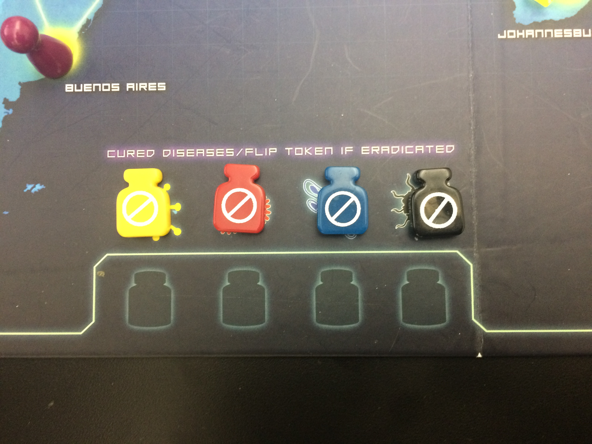

Pandemic Session Report
GAME BEGINS
1. Andy goes first
a. Drives to Chicago > L.A
b. Treats 1 disease
c. Drives to Mexico City>Flies to Sydney
d. Draws 2 player cards: Dehli and Bagdad
e. Draws 2 infection cards and spreads infection to Seoul and Osaka
2. Anthony’s turn
a. Moves to Chicago > L.A
b. Treats 1 disease cube from L.A.
c. Goes to Sydney
d. Draws 2 infection cards: infects Miami, draws epidemic card
e. Moves infection token up one> removes infected discard city pile card from bottom, adds infection cube to Tokyo> shuffles infected discard pile deck, shuffles it and putts it at top of city infection deck
f. Discarded the epidemic card
3. Kira’s turn
a. Drive to Chicago> L.A.
b. Takes 1 disease cube from L.A. cures L.A of disease
c. Drives to Mexico City
d. Draws 2 city cards
e. Osaka and seoul infected +1 cubes
4. Juan
a. Drives to Chicago> S.F.> Tokyo
b. Took all of tokyo’s infection cubes
c. Infects Tokyo and hong kong
5. Andy
a. Manila > Hong Kong (cures one block) > adds a research center to Hong Kong
b. Draws 2 cities Tehraan and Istanbul
c. Draws 2 infection cards: +1 infection cubes to Bogota and Buenos Aires
6. Anthony
a. Takes control of Juan’s pawn and moves him to Seoul
b. Manila > Hong Kong (removes a disease here)
c. Draws 2 city cards: Manila and Lima
d. Draws 2 infection cards: +1 infection block to Bangkok. Can’t add to L.A because Kira’s in a city connected to it and is the quarantine specialist so any city connected cannot be infected
7. Kira
a. Moves to Bogota and cures it 2 times, eradicating the disease
b. Moves to beunos aires
c. Draws 2 cities, Santiago and St. Petersburg
d. Draws 2 infected cards +1 infected cubes to Lagos and Khartoum
8. Juan
a. Treats seoul, removing 2 cubes
b. Goes to ho chi minh city by discarding the city card
c. Goes to Bangkok
d. Draws 2 infect cards Infects Paris and Kinsasha
e. Draws 2 cities: Tokyo and Taipei
f. Out break starts in Africa, every city connected gets +1 infection block, Cairo and
Johanessburg got +1 blocks because others were full
g. Outbreak marker moves up 3 times because 3 cities in Africa now have an outbreak,
h. Paris has an outbreak, its connected cities become infect +1 infection blocks to London,
Essen, Milan, Madrid, Algiers9. Andy
a. Discards cairo card and moves to cairo
b. Puts research station at cairo
c. Treats Cairo -1 one yellow cube
d. Moves to Khartoum
e. Draws 2 city cards : Hong Kong and Shanghai
f. Draws 2 infection cards: Miami and Chennai
10. Anthony
a. Goes to research space in atlanta with shuttle flight action
b. Moves to Miami
c. Dispatcher ability: moves Kira to Bogota
d. Moves Kira to Miami
e. Draws 2 cities: Beijing Jakarta
f. 2 infection cards: Kolkata and London +1 cubes to each
11. Kira
a. Gets Miami card from Anthony by share knowledge action
b. Used event card to remove Paris from inection discard pile
c. Charter flight to St. Petersburg, discards this city’s card from pile
d. Moves to essen
e. Draws 2 cities cards New York and action card to skip infection card pile draw.
f. Uses skip infection pile draw so doesn’t have to draw from that pile this turn.
